British Columbia · GAT-LSTM main model · top-10 features · 70:30 split.
Class balance, day-of-year fire rate, per-feature fire vs no-fire distributions, and feature correlation. Top-10 features from paper Table 9: swvl1, mn2t, lgws, pev, DOY, gwd, blh, mgws, vilwd, swvl2.
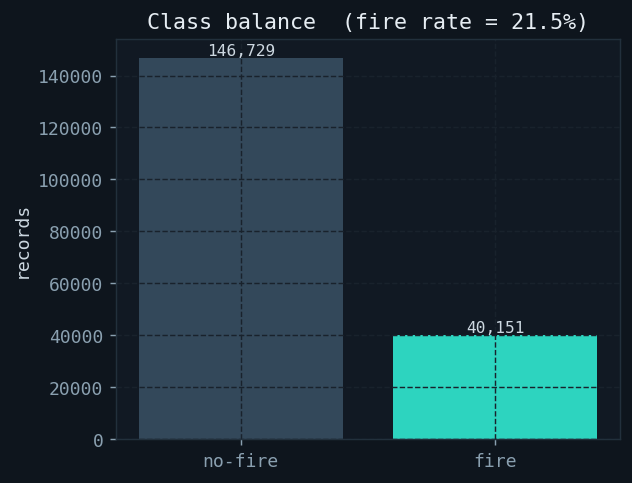
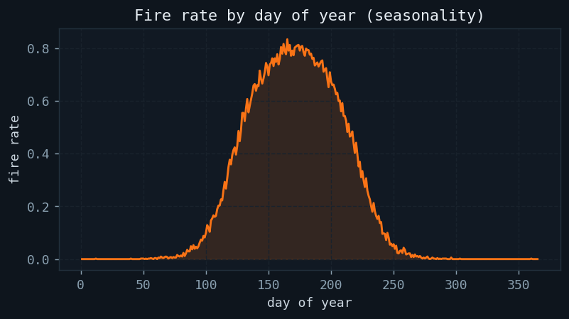
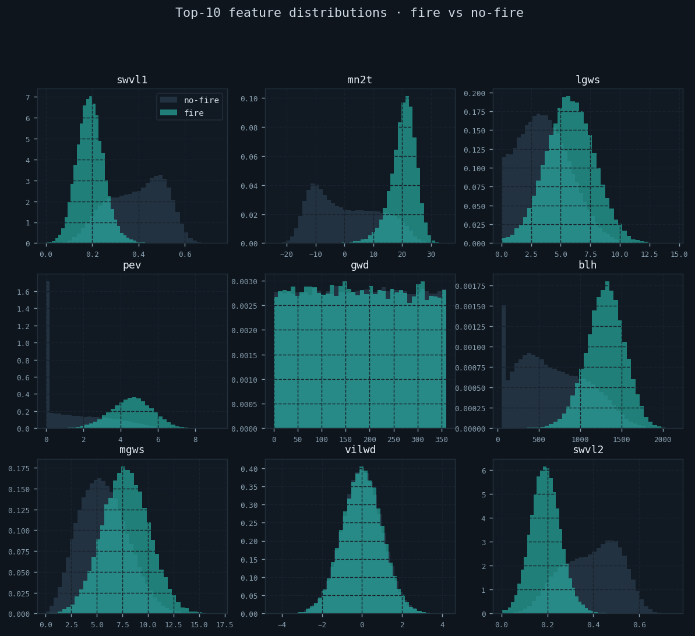
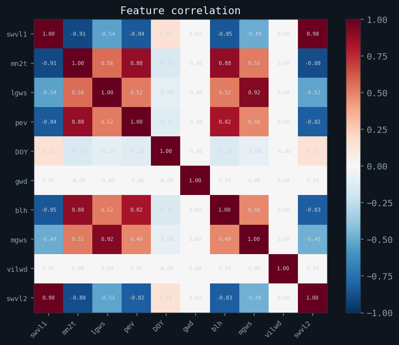
Daily fire count over the simulation period and monthly aggregation showing BC's summer fire peak (July-September).
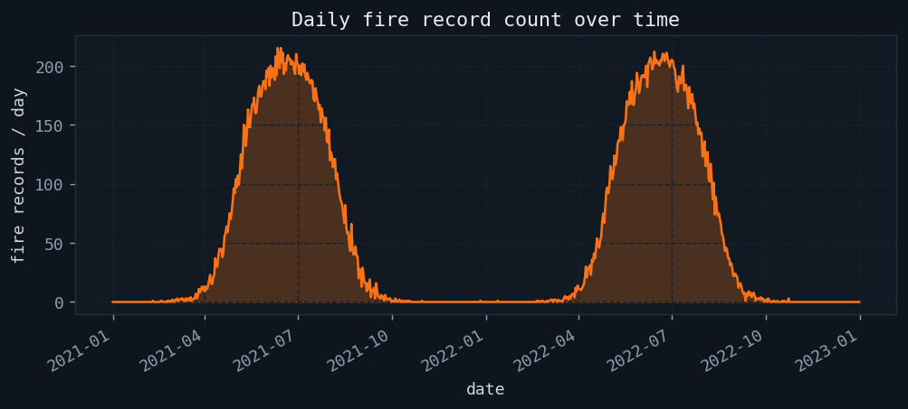
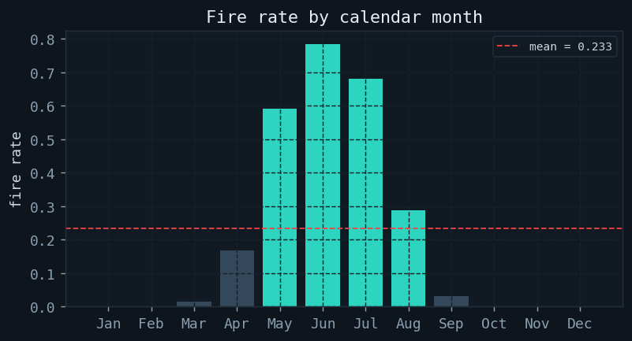
RF feature importance on top-10 features. swvl1 (volumetric soil water) dominates, consistent with paper Table 9.
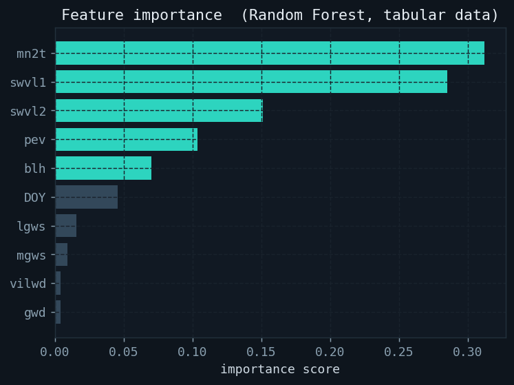
Real GAT-LSTM training curves: loss falls as accuracy, recall, F1, F2, and AUC rise. CosineAnnealingLR (T_max=50, eta_min=1e-5) + gradient clipping (max_norm=1.0). Early stopping on F2 with patience=10. Best-F2 checkpoint is restored.
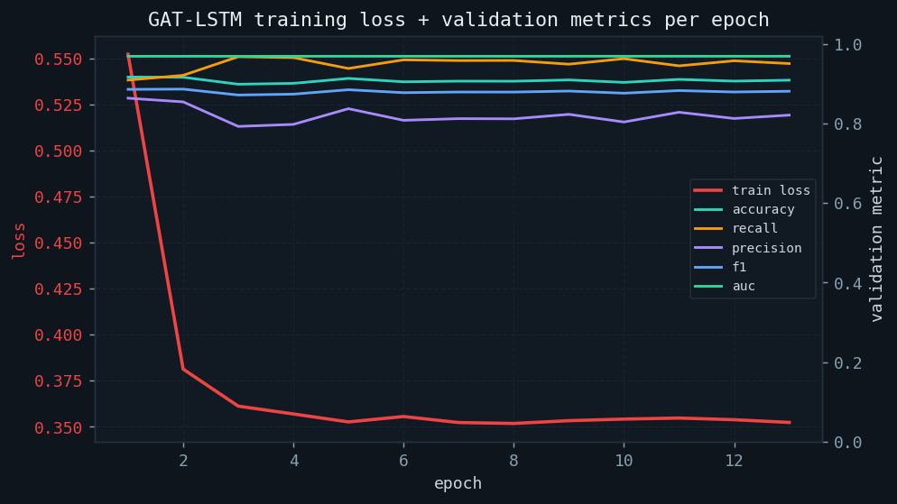
Full diagnostic suite for the primary GAT-LSTM model: ROC curve, PR curve, confusion matrix at F1-optimal threshold, threshold sweep, calibration, risk-tier distribution, probability separation by class, and error breakdown per tier.
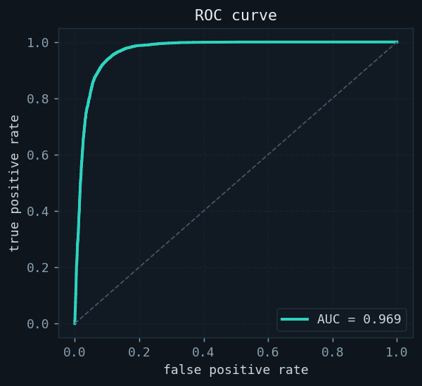
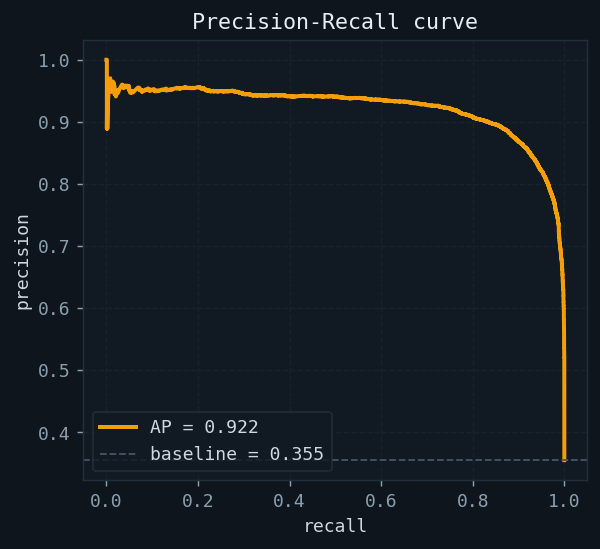
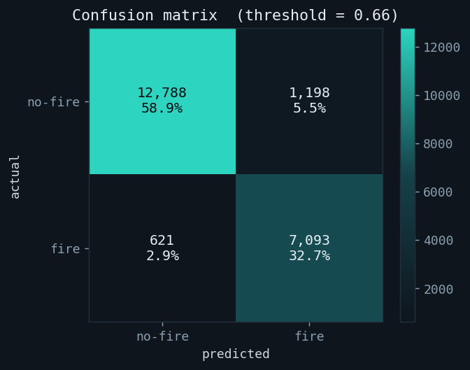
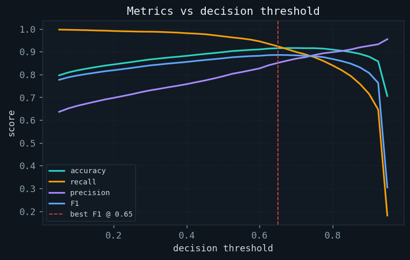
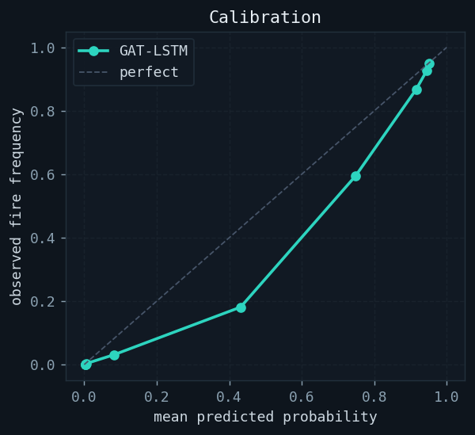
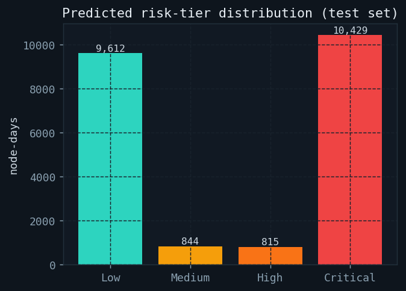
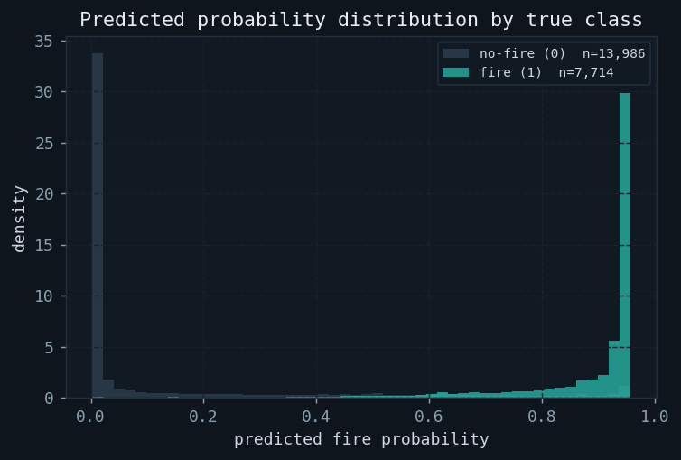
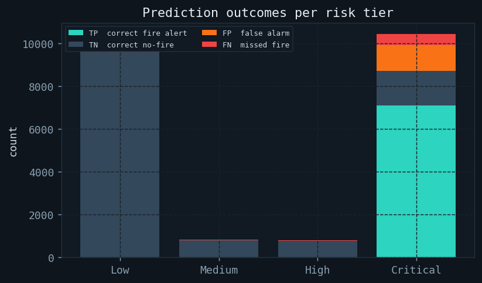
Three-panel precision analysis for GAT-LSTM. At threshold=0.5: Precision=79.2%, Recall=96.7%, F2=92.7%. False alarm interpretation: 1 in 4.8 alerts is a false alarm. F2 score (beta=2) weights recall 2× more than precision — the correct metric for a fire EWS where missed fires are catastrophic.
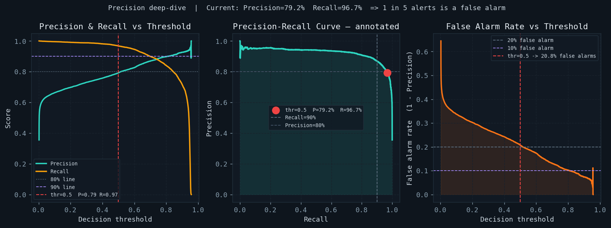
Per-node F1 score on the 10x10 BC sensor grid. Graph attention means nearby fire nodes elevate neighbours — nodes with lower F1 are geographically isolated from training fire events.
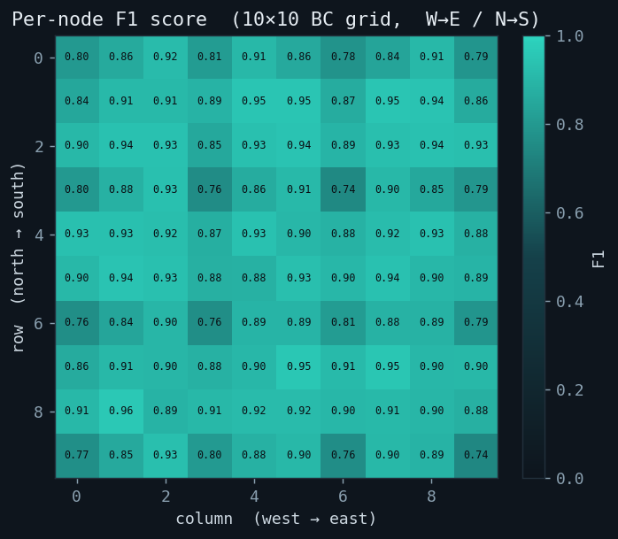
GAT-LSTM (our primary spatial-temporal model) vs the five paper baselines: RNN+LSTM, CatBoost, RandomForest, XGBoost, LightGBM. Paper best on real 3.6M BC records: CatBoost 93.4% acc, 92.1% F1, 0.94 AUC.
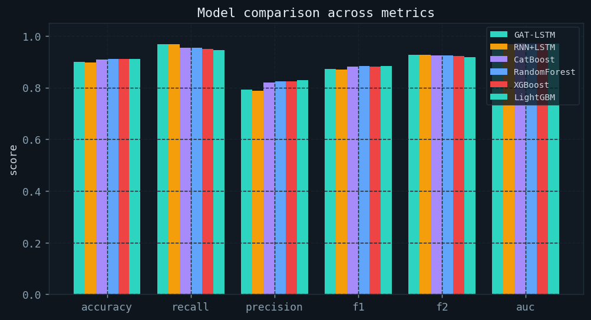
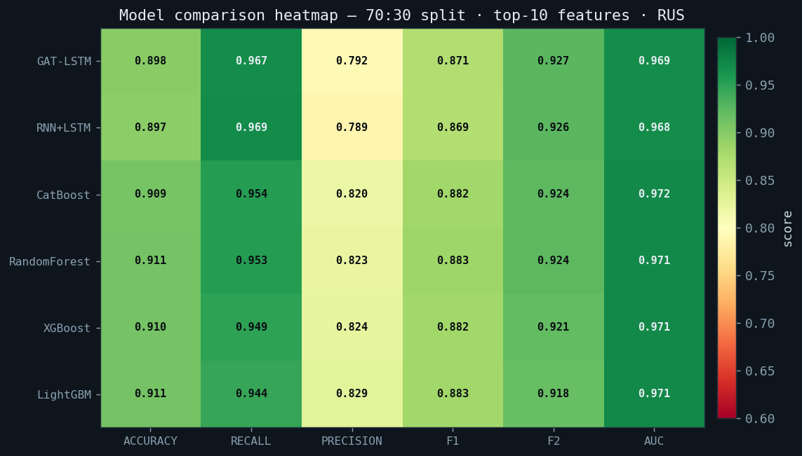
All models on a single ROC plot. GAT-LSTM (teal) captures spatial fire propagation across the sensor graph — an advantage not available to tabular models.
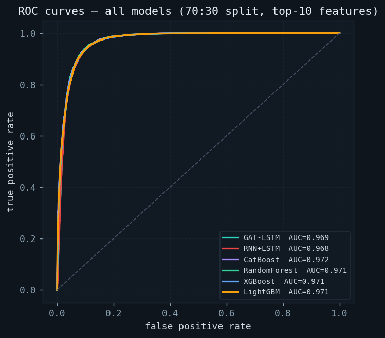